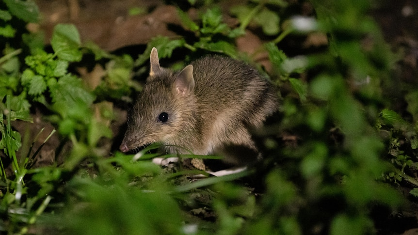

Profile

| Level | Group |
|---|---|
| Kingdom | Animalia |
| Phylum | Chordata |
| Class | Mammalia |
| Order | Peramelemorphia |
| Family | Peramelidae |
| Genus | Perameles |
| Species | gunnii |
Habitat
Native grassland and grassy woodland on the volcanic plains of western Victoria. Bandicoots shelter by day in a domed nest of grass and leaf litter tucked into a tussock or under fallen timber, and feed at night on open grassy ground.
Distribution
Once widespread across the grasslands of western Victoria. By 1989 fewer than 150 were left, in a single population around Hamilton, and the mainland subspecies was declared “Extinct in the Wild” in 2013. It survives today only where people have put it: four predator-proof fenced reserves, two guardian-dog farm sites, and three fox-free islands — Churchill, Phillip and French.
Ecology
Adaptations
- A long pointed snout and strong front claws dig neat conical pits to reach food buried in the soil.
- Pale bars across the rump break up its outline in long grass.
- A backward-facing pouch stops soil filling it while the mother digs.
- Nocturnal — feeds at night and hides in a grass nest by day, out of sight of predators.
- Breeds faster than almost any other mammal: young are born after about twelve days, so numbers climb quickly once a place is safe.
Diet
Mainly an insectivore: earthworms, May bugs, beetle larvae and other soil invertebrates, plus some roots, bulbs and berries.
Role in the ecosystem
The bandicoot is an ecosystem engineer. One animal can dig hundreds of small conical pits in a single night, turning over the soil, letting rain soak in, and mixing dead leaves down into the ground. Those diggings help native grasses grow and speed up decomposition.
Where its energy comes from
Energy enters this ecosystem when kangaroo grass and other native grasses photosynthesise. The bandicoot takes in that energy by eating the worms and grubs that feed on those grasses, living and dead.
Food-web evidence
These are the pieces of the food web for this species.
| Organism | Role in this ecosystem |
|---|---|
| Kangaroo grass | Producer — makes food by photosynthesis |
| Wallaby grass & native tussocks | Producers — seeds, leaves and shelter |
| May bug & beetle larvae | Consumers — eat grass roots; dug up and eaten by the bandicoot |
| Earthworms | Detritivores (decomposer) — feed on dead plant matter; a main food of the bandicoot |
| Eastern Barred Bandicoot | Insectivore (consumer) — eats worms, grubs and beetles |
| European rabbit (introduced) | Herbivore (consumer) — grazes the same grasses and strips the ground cover |
| Red fox (introduced) | Predator (consumer) — the main killer of bandicoots, and the reason they vanished from the mainland |
| Feral cat (introduced) | Predator (consumer) — hunts young bandicoots |
| Swamp harrier | Native predator (consumer) — a bird of prey that eats bandicoots |
| Fungi & bacteria | Decomposers — recycle nutrients into the soil |
- Earthworms
- May bug and beetle larvae
- Other soil insects and spiders
- Roots, bulbs and berries
- Red foxes (introduced)
- Feral cats (introduced)
- Swamp harriers
- Cats and dogs in nearby towns
- Competes with rabbits for grassland
Why this species is endangered
Each threat is a change in either a biotic factor (a living thing / product of a living thing) or an abiotic factor (a non-living thing).
| Threat | What is happening | Biotic or abiotic? |
|---|---|---|
| Red fox | An introduced predator, and the single biggest cause of the decline — the reason bandicoots vanished from unfenced mainland Victoria | Biotic |
| Feral cats | Introduced predators that hunt young bandicoots and are far harder to control than foxes | Biotic |
| Loss of native grassland | Farming and housing have cleared almost all of western Victoria’s grasslands, removing food and shelter | Abiotic |
| Drought | Dry years bake the soil hard and kill the worms and grubs the bandicoot digs for | Abiotic |
Wherever foxes are kept out, bandicoot numbers climb fast. In 2021 the mainland Eastern Barred Bandicoot became the first Australian species ever moved off the ‘Extinct in the Wild’ list. That tells you something important: protecting the habitat alone was not enough — the recovery only worked once the main threat was removed.
Conservation strategies
Three real conservation strategies are being used for the Eastern Barred Bandicoot. Weigh up their main advantages, main disadvantages, and current success.
1 Predator-proof fenced reserves
How it works: Bandicoots are released inside large fenced areas, such as Mt Rothwell and Woodlands Historic Park, that foxes and cats cannot get into.
- Almost total protection from foxes and cats
- Numbers grow quickly and are easy to monitor and count
- Expensive to build, and the fence must be checked constantly
- Space is limited, so each reserve fills up and stops growing
2 Guardian dogs on working farms
How it works: Trained Maremma dogs live out on farmland alongside the bandicoots and drive foxes away, so bandicoots can survive with no fence at all.
- Lets bandicoots live on real farmland instead of inside an enclosure
- Much cheaper than fencing an entire property
- Still a trial — two or three dogs can only guard a small area
- Depends on finding a farmer willing to keep and train the dogs
3 Translocation to fox-free islands
How it works: Bandicoots bred in zoos or raised in fenced reserves are moved to islands that have no foxes — Churchill, Phillip and French Islands.
- No fence to build or maintain — the water does the job
- Populations have grown faster here than anywhere else
- The islands are outside the species’ natural range
- A single fox or cat reaching an island could undo the whole gain
Related species
All four animals below are in the same Order, Peramelemorphia. Three are in the Family Peramelidae; the Greater Bilby is the only one in a different Family (Thylacomyidae). Use this page for classification comparisons and for building a dichotomous key.
| Species | Family and where it lives | Features you can see |
|---|---|---|
| Eastern Barred Bandicoot (Perameles gunnii) |
Peramelidae Native grassland, western Victoria |
|
| Southern Brown Bandicoot (Isoodon obesulus) |
Peramelidae Dense heath and scrub, southern Australia |
|
| Long-nosed Bandicoot (Perameles nasuta) |
Peramelidae Forest and woodland, eastern Australia |
|
| Greater Bilby (Macrotis lagotis) |
Thylacomyidae Arid and semi-arid inland Australia |
|
All four share a long tapered snout, strong digging front claws, and a backward-facing pouch. Those features are inherited from a shared ancestor, which is why they sit in the same Order.
The differences between them come from the environments their ancestors moved into. The bilby’s line went into hot dry country, where big heat-shedding ears and a deep burrow matter. The bandicoot’s line stayed in temperate grassland, where dense tussocks already provide shelter.
Names & classification
Where the name comes from
| Part of the name | Where it comes from | What it means |
|---|---|---|
| Perameles (genus) |
Greek pera + Latin meles | “Pouched badger”. Early European naturalists thought the animal looked and dug like a badger. It is not related to badgers at all. |
| gunnii (species epithet) |
Named after a person | Honours Ronald Campbell Gunn, a nineteenth-century Tasmanian naturalist who collected the specimens the species was first described from. |
| Domain | Eukaryota | The level above Kingdom. It means the cells of this organism have a nucleus. |
The two rules for writing a scientific name
- The Genus takes a capital letter; the species epithet does not.
- The whole name is written in italics, or underlined when handwritten.
Correct: Perameles gunnii. Incorrect: Perameles Gunnii, perameles gunnii, or the name left upright.
Names are not fixed. In 2018 two scientists, Travouillon and Phillips, re-examined the bandicoot family tree using both anatomy and DNA evidence. Animals that had been treated as subspecies of one another turned out to be different enough to be full species — including Perameles notina, the south-eastern striped bandicoot, and Perameles papillon, the Nullarbor barred bandicoot.
Both of those newly named species are extinct. While they were counted as subspecies, their loss was invisible in the records. Once they were named as species, the extinctions could be counted properly.
This matters because names decide what the law protects. A population that has no name of its own is harder to protect and harder to fund.
The mainland Eastern Barred Bandicoot is itself still listed as “Perameles gunnii, unnamed subspecies” — it is recognised as different from the Tasmanian population, but has not yet been given a name of its own.
Timeline & status
Conservation status
| Mainland (Victorian) population | Tasmanian population | |
|---|---|---|
| Status | Endangered | Vulnerable |
| Listed under | EPBC Act (national) and the Victorian Flora and Fauna Guarantee Act | EPBC Act (national) |
| Population trend | Increasing | Decreasing |
These are two separate listings. When you look this species up, check which population the entry refers to — the mainland animal is the one in this booklet.
Timeline
| When | What happened | Why it matters |
|---|---|---|
| From 1855 | Red foxes brought to Victoria from Europe for hunting; established in the wild by about 1870 | A predator the bandicoot had never encountered, and had no defence against |
| By the 1890s | Foxes widespread across southern Australia | Bandicoot range begins to collapse |
| 1989 | Fewer than 150 mainland bandicoots left, in one population near Hamilton | The species is within reach of extinction |
| 1991 | Zoos Victoria begins captive breeding | An insurance population is created; 650+ bred over the next 30 years |
| 2013 | Declared ‘Extinct in the Wild’ on mainland Australia | No self-sustaining wild population left outside human protection |
| 2017 and 2019 | Releases onto Phillip Island, then French Island | Fox-free islands allow numbers to grow fast |
| 2020 and 2021 | Guardian dog trials begin at Skipton, then Dunkeld | First attempt to protect bandicoots on open farmland |
| 2021 | Reclassified from ‘Extinct in the Wild’ to ‘Endangered’; captive breeding programme ends | The first Australian species ever moved off the ‘Extinct in the Wild’ list |
| Today | About 1,500 animals; recovery goal is 2,500 | Numbers are rising but the species is not yet secure |
The grassland
How much is left
The bandicoot’s home is the natural temperate grassland of the Victorian Volcanic Plain. More than 99% of it has been cleared or heavily modified since European settlement — ploughed for crops, grazed by sheep and cattle, or built over. Less than 5% remains, and it is listed as a Critically Endangered ecological community under national law. What survives is mostly small fragments along roadsides, rail reserves and old cemeteries.
This grassland also supports the Growling Grass Frog, the Striped Legless Lizard, the Golden Sun Moth and more than 25 other nationally threatened species.
What this ecosystem does for people
| Service | Category | How it works |
|---|---|---|
| Soil turnover and aeration | Supporting | One bandicoot digs hundreds of conical pits a night. This mixes leaf litter into the soil and lets rain soak in instead of running off. |
| Nutrient cycling | Supporting | Burying litter puts it in contact with soil fungi and bacteria, so it breaks down faster and returns nutrients to the soil for plants. |
| Pest control | Regulating | May bug larvae damage pasture roots. A bandicoot eating them nightly suppresses a pest that costs farmers money. |
| Carbon storage | Regulating | Deep-rooted native grasses hold large amounts of carbon in the soil. Keeping the grassland intact keeps that carbon out of the atmosphere. |
| Education and culture | Cultural | The bandicoot’s recovery is used as a flagship conservation story, drawing public support and funding for grassland protection generally. |
First Nations knowledge
The grasslands of western Victoria are the Country of Aboriginal peoples including the Wurundjeri Woi-wurrung and other groups of the Kulin Nation, who have cared for these landscapes for tens of thousands of years and continue to do so today.
Cultural burning
Traditional Owners light cool, patchy, low-intensity fires at the right time of year. These fires keep grassland open, bring on fresh growth, and stop dry material building up into fuel for a destructive hot fire. They also maintain a mosaic of thick and open patches — exactly what a ground-dwelling animal like the bandicoot needs: dense tussocks to nest in, open ground to forage on.
Land managers in Victoria now work with Traditional Owner groups on cultural burning programs. The understanding that grassland needs regular gentle disturbance, rather than no fire or occasional severe fire, was held in First Nations practice long before it was described by ecologists.
Murnong, the yam daisy
Murnong was a staple food across these grasslands, its tubers dug with a digging stick. That digging turned over the soil across huge areas — much as bandicoot diggings do — and helped keep the grassland productive. Murnong became scarce within a few decades of European sheep arriving.
In First Nations knowledge systems, Country is a living system that people belong to and are responsible for, not a resource that people own. Looking after the grassland, the animals in it and the people who depend on it are not separate jobs — they are the same obligation.
This is living knowledge held by people today, not a practice from the past.